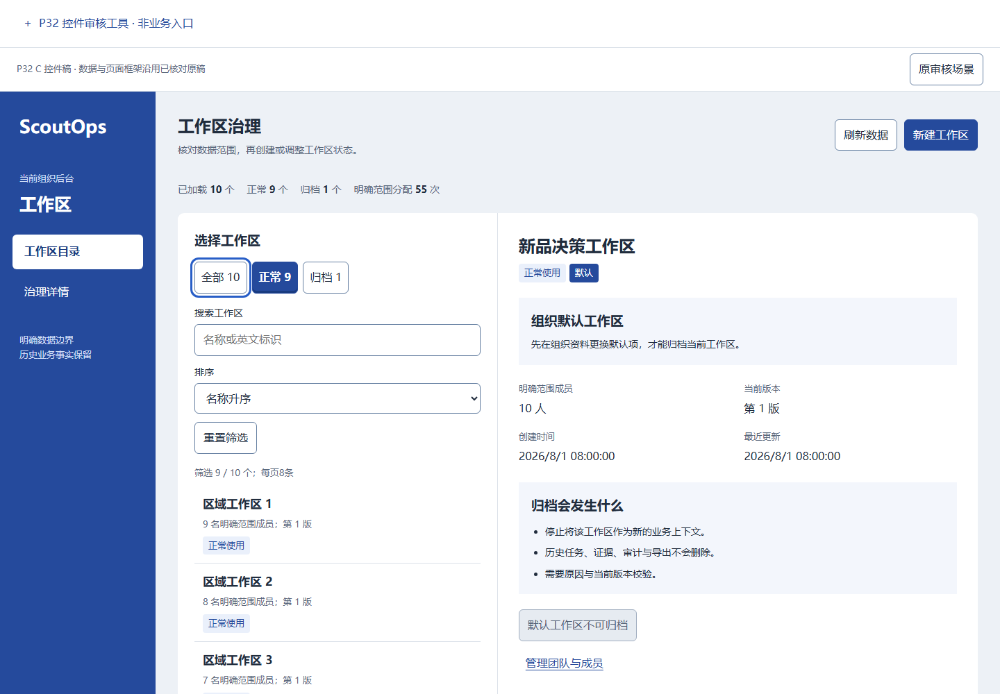
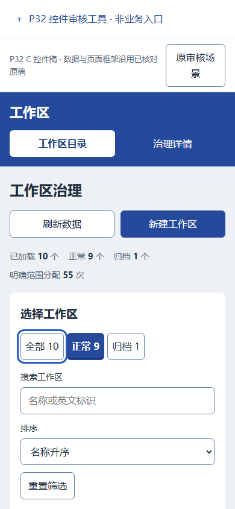
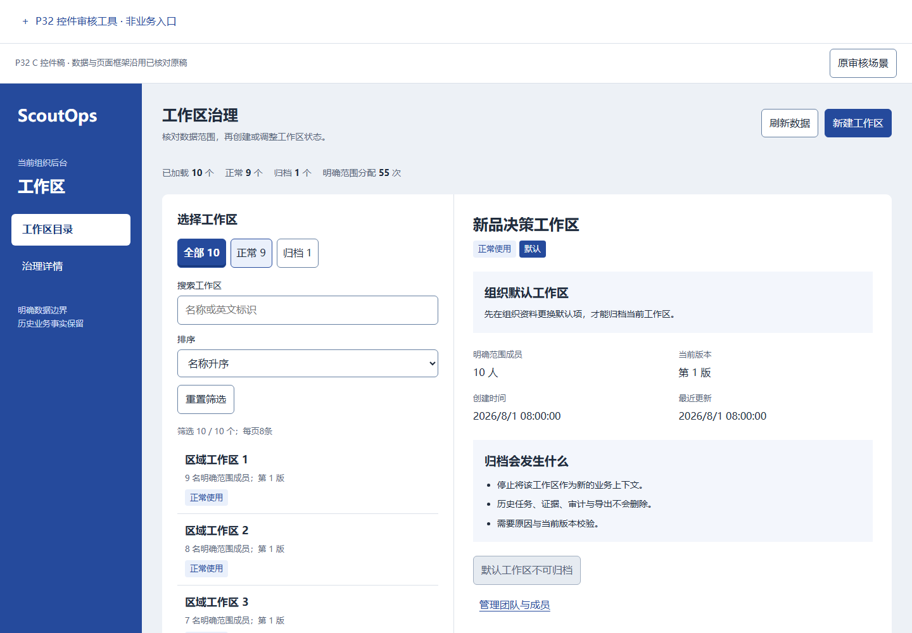
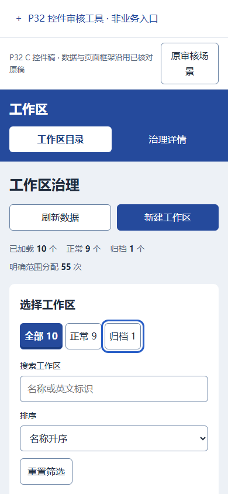
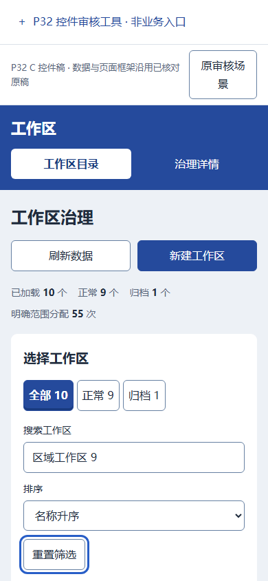

P32 控件图册
刷新工作区
OG-REFRESH · #refresh
归档原因确认
D-OG-REASON · #reason-confirm
头部打开创建
OG-W-OPEN · .head-actions [data-create]
创建并写入审计
OG-W-CREATE · #create-submit
取消创建草稿
OG-W-CANCEL · #cancel-create
全部 / 未选
OG-W-STATUS-ALL · [data-status='all']
default / 1440pxhover / 1440px
focus / 1440pxpressed / 1440pxdefault / 390pxhover / 390px
focus / 390pxpressed / 390px 正常 / 未选
OG-W-STATUS-ACTIVE · [data-status='active']
 default / 1440px
default / 1440px
hover / 1440pxfocus / 1440pxpressed / 1440px default / 390pxhover / 390pxfocus / 390pxpressed / 390px
default / 390pxhover / 390pxfocus / 390pxpressed / 390px归档 / 未选
OG-W-STATUS-ARCHIVED · [data-status='archived']
default / 1440pxhover / 1440pxfocus / 1440pxpressed / 1440px default / 390pxhover / 390px
default / 390pxhover / 390px
focus / 390pxpressed / 390px 重置筛选
OG-W-RESET · .filter-fields [data-reset]
default / 1440pxhover / 1440pxfocus / 1440pxpressed / 1440pxdefault / 390pxhover / 390px
focus / 390pxpressed / 390px 空结果清筛选
OG-W-CLEAR-EMPTY · .empty [data-reset]
选择另一工作区
OG-W-SELECT · .workspace-list li:nth-child(2) button
上一页
OG-W-PREVIOUS · .pagination button:first-child
default / 1440pxhover / 1440pxfocus / 1440pxpressed / 1440pxdisabled / 1440px default / 390pxhover / 390pxfocus / 390pxpressed / 390pxdisabled / 390px
default / 390pxhover / 390pxfocus / 390pxpressed / 390pxdisabled / 390px 下一页
OG-W-NEXT · .pagination button:last-child
 default / 1440pxhover / 1440pxfocus / 1440pxpressed / 1440pxdisabled / 1440px
default / 1440pxhover / 1440pxfocus / 1440pxpressed / 1440pxdisabled / 1440px default / 390pxhover / 390pxfocus / 390pxpressed / 390pxdisabled / 390px
default / 390pxhover / 390pxfocus / 390pxpressed / 390pxdisabled / 390px归档非默认工作区
OG-W-STATE · #state-action
 default / 1440pxhover / 1440pxfocus / 1440pxpressed / 1440pxbusy / 1440pxdefault / 390pxhover / 390pxfocus / 390pxpressed / 390pxbusy / 390px
default / 1440pxhover / 1440pxfocus / 1440pxpressed / 1440pxbusy / 1440pxdefault / 390pxhover / 390pxfocus / 390pxpressed / 390pxbusy / 390px修改默认工作区
OG-W-PROFILE · a[data-route][href='/org-admin']
default / 1440px hover / 1440pxfocus / 1440pxpressed / 1440px
hover / 1440pxfocus / 1440pxpressed / 1440px default / 390pxhover / 390pxfocus / 390pxpressed / 390px
default / 390pxhover / 390pxfocus / 390pxpressed / 390px 空目录创建入口
OG-W-OPEN · .empty [data-create]
default / 1440pxhover / 1440pxfocus / 1440pxpressed / 1440pxdefault / 390pxhover / 390pxfocus / 390pxpressed / 390px 首次读取不可刷新
OG-REFRESH · #refresh
disabled / 1440pxdisabled / 390px 重读 / blocked
OG-RETRY · #retry
default / 1440pxhover / 1440pxfocus / 1440pxpressed / 1440pxdefault / 390pxhover / 390pxfocus / 390pxpressed / 390px 重读 / expired
OG-RETRY · #retry
default / 1440pxhover / 1440pxfocus / 1440pxpressed / 1440pxdefault / 390pxhover / 390pxfocus / 390pxpressed / 390px 重读 / forbidden
OG-RETRY · #retry
default / 1440pxhover / 1440pxfocus / 1440pxpressed / 1440pxdefault / 390pxhover / 390pxfocus / 390pxpressed / 390px 重读 / rate_limited
OG-RETRY · #retry
default / 1440pxhover / 1440pxfocus / 1440pxpressed / 1440pxdefault / 390pxhover / 390pxfocus / 390pxpressed / 390px active / 已选
OG-W-STATUS-ACTIVE · [data-status='active']
default / 1440px hover / 1440pxfocus / 1440pxpressed / 1440pxdefault / 390pxhover / 390pxfocus / 390pxpressed / 390px
hover / 1440pxfocus / 1440pxpressed / 1440pxdefault / 390pxhover / 390pxfocus / 390pxpressed / 390px archived / 已选
OG-W-STATUS-ARCHIVED · [data-status='archived']
default / 1440px hover / 1440pxfocus / 1440pxpressed / 1440pxdefault / 390px
hover / 1440pxfocus / 1440pxpressed / 1440pxdefault / 390px hover / 390pxfocus / 390pxpressed / 390px
hover / 390pxfocus / 390pxpressed / 390px 恢复归档工作区
OG-W-STATE · #state-action
default / 1440pxhover / 1440pxfocus / 1440pxpressed / 1440pxdefault / 390pxhover / 390pxfocus / 390pxpressed / 390px 默认工作区保护
OG-W-STATE · #state-action
disabled / 1440px disabled / 390px
disabled / 390px 收起技术详情
OG-W-TECH · #technical summary
 default / 1440pxhover / 1440pxfocus / 1440pxpressed / 1440pxdefault / 390px
default / 1440pxhover / 1440pxfocus / 1440pxpressed / 1440pxdefault / 390px hover / 390pxfocus / 390pxpressed / 390px
hover / 390pxfocus / 390pxpressed / 390px恢复原因确认
D-OG-REASON · #reason-confirm
 default / 1440pxhover / 1440pxfocus / 1440pxpressed / 1440pxdefault / 390pxhover / 390pxfocus / 390pxpressed / 390px
default / 1440pxhover / 1440pxfocus / 1440pxpressed / 1440pxdefault / 390pxhover / 390pxfocus / 390pxpressed / 390px归档 / 取消
D-OG-REASON · #reason-cancel
default / 1440pxhover / 1440pxfocus / 1440pxpressed / 1440pxdefault / 390pxhover / 390pxfocus / 390pxpressed / 390px 归档 / 关闭
D-OG-REASON · #reason-close
 default / 1440pxhover / 1440pxfocus / 1440pxpressed / 1440px
default / 1440pxhover / 1440pxfocus / 1440pxpressed / 1440px default / 390pxhover / 390pxfocus / 390pxpressed / 390px
default / 390pxhover / 390pxfocus / 390pxpressed / 390px恢复 / 取消
D-OG-REASON · #reason-cancel
 default / 1440pxhover / 1440pxfocus / 1440pxpressed / 1440pxdefault / 390pxhover / 390pxfocus / 390pxpressed / 390px
default / 1440pxhover / 1440pxfocus / 1440pxpressed / 1440pxdefault / 390pxhover / 390pxfocus / 390pxpressed / 390px恢复 / 关闭
D-OG-REASON · #reason-close
default / 1440pxhover / 1440pxfocus / 1440pxpressed / 1440px default / 390pxhover / 390pxfocus / 390pxpressed / 390px
default / 390pxhover / 390pxfocus / 390pxpressed / 390px